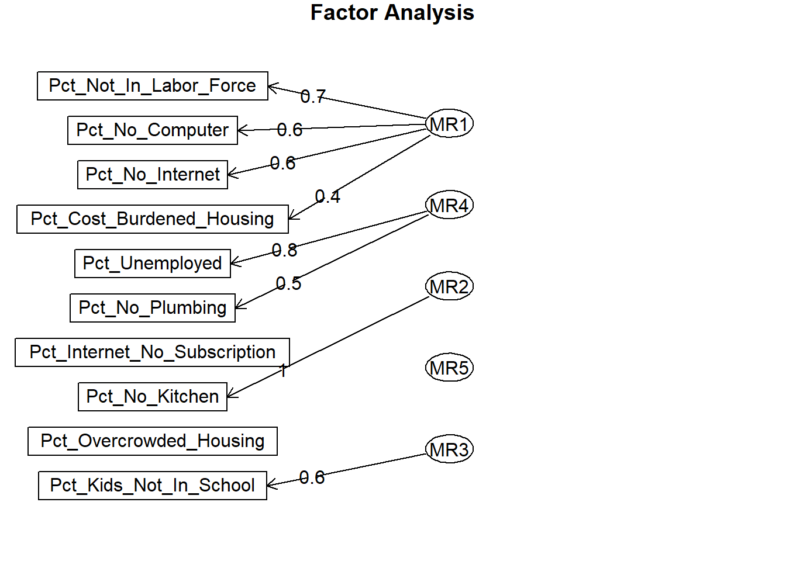
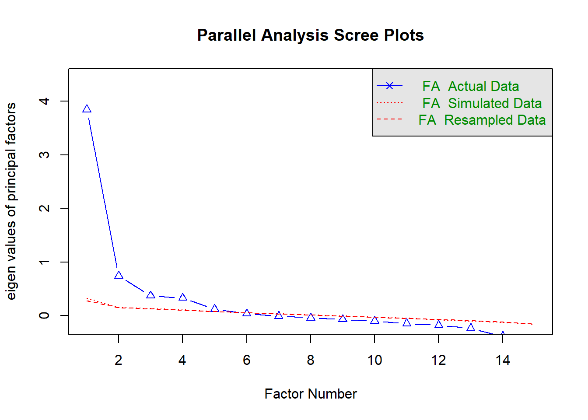
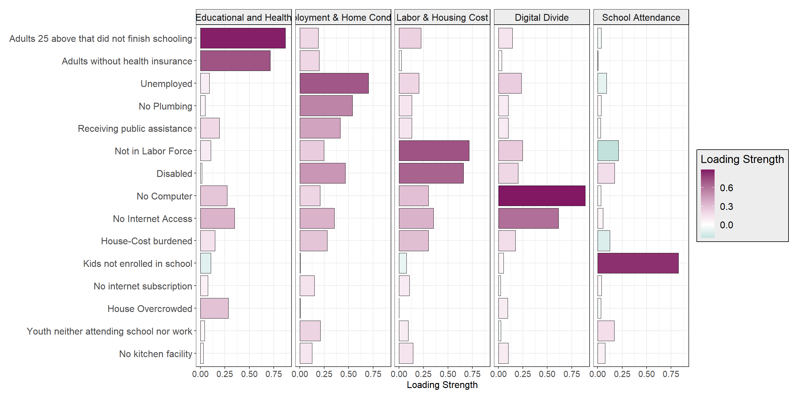

deprivation_percentages <- chicago_data_deprivation %>%
mutate(
# Income
#Pct_Below_Poverty = (total_below_povertyE / poverty_totalE) * 100,
Pct_Receiving_PA = (total_recieve_paE / recieve_pa_totalE) * 100,
# Education
Pct_Kids_Not_In_School = (kids_Not_In_SchoolE / kids_totalE) * 100,
Pct_Youth_Not_In_School_Not_Working = ((youth_male_xschool_unemployedE + youth_male_xschool_xlfE +
youth_female_xschool_unemployedE + youth_female_xschool_xlfE) / youth_totalE) * 100,
Pct_Adults_No_HighSchool = ((abv25_no_schoolE + abv25_nurseryE + abv25_kindergartenE + abv25_g1E +
abv25_g2E + abv25_g3E + abv25_g4E + abv25_g5E + abv25_g6E +
abv25_g7E + abv25_g8E + abv25_g9E + abv25_g10E + abv25_g11E +
abv25_g12E) / total_abv25E) * 100,
# Health
Pct_Disabled = ((dis_male_4E + dis_male_5_17E + dis_male_18_34E + dis_male_35_64E +
dis_male_65_74E + dis_male_75E + dis_female_4E + dis_female_5_17E +
dis_female_18_34E + dis_female_35_64E + dis_female_65_74E +
dis_female_75E) / dis_totalE) * 100,
Pct_No_Insurance = ((no_ins_dis_18E + no_ins_xdis_18E + no_ins_dis_19_64E +
no_ins_xdis_19_64E + no_ins_dis_65E + no_ins_xdis_65E) / ins_totalE) * 100,
# Housing
Pct_Overcrowded_Housing = ((Overcrowded_Housing_ownE + Overcrowded_Housing_rentE) / housing_totalE) * 100,
Pct_Cost_Burdened_Housing = ((cost_burdened_housing_30_35E + cost_burdened_housing_35_40E +
cost_burdened_housing_40_50E + cost_burdened_housing_50_aboveE) /
cost_burdened_housing_totalE) * 100,
# Living Conditions
Pct_No_Plumbing = (no_plumbingE / total_housing_plumbingE) * 100,
Pct_No_Kitchen = ((no_kitchen_ownE + no_kitchen_rentE) / total_housing_kitchenE) * 100,
# Digital Divide
Pct_No_Computer = (no_computerE / total_householdsE) * 100,
Pct_No_Internet = (no_internetE / total_householdsE) * 100,
Pct_Internet_No_Subscription = (internet_no_subscriptionE / total_householdsE) * 100,
# Employment
Pct_Unemployed = (unemployedE / workforce_totalE) * 100,
Pct_Not_In_Labor_Force = (not_in_labor_forceE / pop_employment_totalE) * 100
) %>%
select(GEOID, starts_with("Pct_")) # Keep only GEOID and calculated percentages2 Methodology
This project is seeks to investigate poverty in Chicago, and the various deprivations that households face. Data visualizations were produced using data published in the American Community Survey 5-Year Estimates as at 2022, compiled by the US Census Bureau.
2.1 Instructions to Execute Code
To reproduce this analysis, an API key from the US Census Bureau is required. Follow these steps to obtain and use the key:
1.) Request an API key by visiting this page to request a key
2.) Activate the key using the link sent to your email.
3.) Store the key as an environment variable in your project for secure access.
Note: Detailed instructions and the code for the analysis are provided in the accompanying R Markdown document.
3 Multidimensional Poverty
The starting point of constructing a Multidimensional Poverty Indicator would be the generation of a matrix representing tract areas versus indicators of deprivation.
To generate this matrix, the first step is to identify dimensions of deprivation that can be constructed using the ACS. These are:
Income - percentage receiving public assistance
Education - percentage of kids not enrolled in school
Health - percentage of adults without health insurance
Health - percentage of children with disability status
Health - percentage of adults with disability status
Housing - percentage overcrowded: more than 2 occupants per room
Housing - percentage cost-burdened
Living Conditions - percentage without plumbing facilities
Living Conditions - percentage without kitchen facilities
Digitalization - percentage without computer
Digitalization - percentage without internet access
Digitalization - percentage internet access without subscription
Employment - percent unemployed
Employment - percent not in labor force
4 Deprivation Cutoffs
Typically, deprivation cutoffs are thresholds used to determine whether a household is considered deprived in a particular dimension. These cutoffs are crucial in generating a raw deprivation matrix, as they help to classify the population into different categories based on their level of deprivation.
In our case, we deviate from the standard practice by setting the deprivation cutoffs at 0%. This means that we consider any level of deprivation within a household as significant enough to count towards the overall deprivation score for a census tract. By employing this approach, we are able to capture the full spectrum of deprivation levels, from the most mild to the most severe.
5 Exploratory Factor Analysis
library(psych)Warning: package 'psych' was built under R version 4.2.3
Attaching package: 'psych'The following objects are masked from 'package:ggplot2':
%+%, alpha# Exclude non-numeric variables if any
deprivation_factors <- deprivation_percentages %>%
select(-GEOID) %>% # Exclude GEOID or any other non-numeric variables
select_if(is.numeric) # Select only numeric columns
# Check for NA values and decide on handling strategy
summary(deprivation_factors) Pct_Receiving_PA Pct_Kids_Not_In_School Pct_Youth_Not_In_School_Not_Working
Min. : 0.000 Min. :11.93 Min. : 0.000
1st Qu.: 1.048 1st Qu.:71.68 1st Qu.: 0.000
Median : 2.371 Median :75.69 Median : 0.000
Mean : 3.301 Mean :75.33 Mean : 2.632
3rd Qu.: 4.700 3rd Qu.:80.09 3rd Qu.: 0.000
Max. :21.964 Max. :97.30 Max. :100.000
NA's :4 NA's :4 NA's :25
Pct_Adults_No_HighSchool Pct_Disabled Pct_No_Insurance
Min. : 0.000 Min. : 0.3284 Min. : 0.000
1st Qu.: 4.378 1st Qu.: 7.4678 1st Qu.: 3.944
Median : 9.984 Median :10.1953 Median : 7.590
Mean :12.407 Mean :11.4048 Mean : 8.976
3rd Qu.:17.967 3rd Qu.:14.3950 3rd Qu.:12.783
Max. :52.635 Max. :37.9172 Max. :41.686
NA's :4 NA's :4 NA's :4
Pct_Overcrowded_Housing Pct_Cost_Burdened_Housing Pct_No_Plumbing
Min. :0.0000 Min. : 0.00 Min. : 0.0000
1st Qu.:0.0000 1st Qu.: 34.68 1st Qu.: 0.0000
Median :0.0000 Median : 45.13 Median : 0.6113
Mean :0.3091 Mean : 45.73 Mean : 2.1149
3rd Qu.:0.0000 3rd Qu.: 56.67 3rd Qu.: 2.5272
Max. :7.5419 Max. :100.00 Max. :39.0738
NA's :4 NA's :7 NA's :4
Pct_No_Kitchen Pct_No_Computer Pct_No_Internet
Min. : 0.0000 Min. : 0.000 Min. : 0.000
1st Qu.: 0.0000 1st Qu.: 2.820 1st Qu.: 4.194
Median : 0.0000 Median : 5.722 Median : 8.173
Mean : 0.7670 Mean : 7.104 Mean :10.065
3rd Qu.: 0.8996 3rd Qu.: 9.988 3rd Qu.:14.204
Max. :13.8008 Max. :40.765 Max. :45.918
NA's :4 NA's :4 NA's :4
Pct_Internet_No_Subscription Pct_Unemployed Pct_Not_In_Labor_Force
Min. : 0.0000 Min. : 0.000 Min. : 5.971
1st Qu.: 0.6063 1st Qu.: 3.571 1st Qu.:28.549
Median : 1.7697 Median : 6.085 Median :34.457
Mean : 2.7185 Mean : 8.300 Mean :34.365
3rd Qu.: 3.8625 3rd Qu.:10.737 3rd Qu.:40.961
Max. :21.9839 Max. :47.742 Max. :94.788
NA's :4 NA's :4 NA's :4 fa_result <- fa(deprivation_factors, nfactors = 5, rotate = "varimax", fm = "minres")
# Print the factor analysis results
print(fa_result)Factor Analysis using method = minres
Call: fa(r = deprivation_factors, nfactors = 5, rotate = "varimax",
fm = "minres")
Standardized loadings (pattern matrix) based upon correlation matrix
MR2 MR4 MR1 MR5 MR3 h2 u2
Pct_Receiving_PA 0.19 0.41 0.13 0.10 -0.03 0.237 0.7629
Pct_Kids_Not_In_School -0.11 -0.01 -0.08 0.05 0.83 0.702 0.2979
Pct_Youth_Not_In_School_Not_Working 0.04 0.21 0.09 -0.03 0.17 0.084 0.9157
Pct_Adults_No_HighSchool 0.87 0.19 0.23 0.14 -0.03 0.862 0.1381
Pct_Disabled -0.02 0.46 0.66 0.20 0.17 0.720 0.2796
Pct_No_Insurance 0.71 0.20 0.03 0.03 0.00 0.551 0.4493
Pct_Overcrowded_Housing 0.29 0.01 0.00 0.09 -0.03 0.092 0.9084
Pct_Cost_Burdened_Housing 0.15 0.28 0.30 0.17 -0.12 0.236 0.7643
Pct_No_Plumbing 0.05 0.54 0.13 0.10 0.04 0.320 0.6802
Pct_No_Kitchen 0.03 0.13 0.14 0.10 0.08 0.053 0.9465
Pct_No_Computer 0.27 0.21 0.30 0.89 0.03 0.997 0.0025
Pct_No_Internet 0.35 0.35 0.35 0.61 0.05 0.752 0.2477
Pct_Internet_No_Subscription 0.08 0.15 0.11 0.02 0.04 0.041 0.9587
Pct_Unemployed 0.09 0.70 0.20 0.24 -0.09 0.605 0.3947
Pct_Not_In_Labor_Force 0.11 0.25 0.72 0.25 -0.21 0.690 0.3098
com
Pct_Receiving_PA 1.8
Pct_Kids_Not_In_School 1.1
Pct_Youth_Not_In_School_Not_Working 2.5
Pct_Adults_No_HighSchool 1.3
Pct_Disabled 2.2
Pct_No_Insurance 1.2
Pct_Overcrowded_Housing 1.2
Pct_Cost_Burdened_Housing 3.5
Pct_No_Plumbing 1.2
Pct_No_Kitchen 3.5
Pct_No_Computer 1.6
Pct_No_Internet 3.0
Pct_Internet_No_Subscription 2.6
Pct_Unemployed 1.5
Pct_Not_In_Labor_Force 1.8
MR2 MR4 MR1 MR5 MR3
SS loadings 1.64 1.64 1.42 1.42 0.82
Proportion Var 0.11 0.11 0.09 0.09 0.05
Cumulative Var 0.11 0.22 0.31 0.41 0.46
Proportion Explained 0.24 0.24 0.20 0.20 0.12
Cumulative Proportion 0.24 0.47 0.68 0.88 1.00
Mean item complexity = 2
Test of the hypothesis that 5 factors are sufficient.
df null model = 105 with the objective function = 4.6 with Chi Square = 6101.43
df of the model are 40 and the objective function was 0.09
The root mean square of the residuals (RMSR) is 0.02
The df corrected root mean square of the residuals is 0.03
The harmonic n.obs is 1325 with the empirical chi square 85.88 with prob < 3.4e-05
The total n.obs was 1332 with Likelihood Chi Square = 115.98 with prob < 2.5e-09
Tucker Lewis Index of factoring reliability = 0.967
RMSEA index = 0.038 and the 90 % confidence intervals are 0.03 0.046
BIC = -171.8
Fit based upon off diagonal values = 1
Measures of factor score adequacy
MR2 MR4 MR1 MR5 MR3
Correlation of (regression) scores with factors 0.92 0.80 0.82 0.98 0.85
Multiple R square of scores with factors 0.85 0.65 0.66 0.96 0.72
Minimum correlation of possible factor scores 0.71 0.30 0.33 0.93 0.44print(fa_result$values) [1] 4.085341333 1.108575875 0.826211308 0.597304147 0.327840052
[6] 0.144707267 0.082097939 0.053076216 0.025620213 0.021642830
[11] -0.009223714 -0.043425297 -0.052486179 -0.070706753 -0.153102481# Plot the factor loadings for a visual representation
fa.diagram(fa_result)
# Parallel
fa.parallel(deprivation_factors, fm = "minres", fa = "fa")
Parallel analysis suggests that the number of factors = 5 and the number of components = NA # Examine factor loadings
loadings <- fa_result$loadings
# Print factor loadings for interpretation
print(loadings)
Loadings:
MR2 MR4 MR1 MR5 MR3
Pct_Receiving_PA 0.193 0.414 0.131
Pct_Kids_Not_In_School -0.106 0.826
Pct_Youth_Not_In_School_Not_Working 0.212 0.168
Pct_Adults_No_HighSchool 0.868 0.189 0.225 0.143
Pct_Disabled 0.465 0.659 0.200 0.173
Pct_No_Insurance 0.714 0.199
Pct_Overcrowded_Housing 0.285
Pct_Cost_Burdened_Housing 0.147 0.280 0.301 0.173 -0.123
Pct_No_Plumbing 0.538 0.130 0.100
Pct_No_Kitchen 0.127 0.143 0.102
Pct_No_Computer 0.274 0.208 0.300 0.888
Pct_No_Internet 0.350 0.354 0.352 0.615
Pct_Internet_No_Subscription 0.149 0.107
Pct_Unemployed 0.702 0.202 0.236
Pct_Not_In_Labor_Force 0.106 0.246 0.716 0.248 -0.211
MR2 MR4 MR1 MR5 MR3
SS loadings 1.643 1.636 1.423 1.418 0.824
Proportion Var 0.110 0.109 0.095 0.095 0.055
Cumulative Var 0.110 0.219 0.313 0.408 0.463library(reshape2)Warning: package 'reshape2' was built under R version 4.2.3
Attaching package: 'reshape2'The following object is masked from 'package:tidyr':
smithslibrary(ggplot2)
# Extract loadings matrix
loadings_matrix <- fa_result$loadings
# Assuming the last 3 rows are SS loadings, prop. var., and cum. var., remove them
loadings_matrix_clean <- loadings_matrix[1:(nrow(loadings_matrix)), ]
# Convert clean loadings matrix to a dataframe
loadings_df <- as.data.frame(loadings_matrix_clean)
# Add row names as a new column for variable names
loadings_df$Variable <- rownames(loadings_df)
# Define the order
Ord <- rev(c("Pct_Adults_No_HighSchool",
"Pct_No_Insurance",
"Pct_Unemployed",
"Pct_No_Plumbing",
"Pct_Receiving_PA",
"Pct_Not_In_Labor_Force",
"Pct_Disabled",
"Pct_No_Computer",
"Pct_No_Internet",
"Pct_Cost_Burdened_Housing",
"Pct_Kids_Not_In_School",
"Pct_Internet_No_Subscription",
"Pct_Overcrowded_Housing",
"Pct_Youth_Not_In_School_Not_Working",
"Pct_No_Kitchen"
))
# Set the factor levels based on the order
loadings_df$Variable <- factor(loadings_df$Variable, levels = Ord)
# Optionally rename the factor columns
# This depends on how many factors you have
colnames(loadings_df)[1:ncol(loadings_df)-1] <- c("Educational and Health",
"Employment & Home Condition",
"Labor & Housing Cost",
"Digital Divide",
"School Attendance")
# Melt the dataframe
loadings_long <- melt(loadings_df, id.vars = "Variable", variable.name = "Factor", value.name = "Loading")
# Now, rename the levels of the Variable factor
loadings_long$Variable <- factor(loadings_long$Variable, levels = Ord,
labels = rev(c('Adults 25 above that did not finish schooling',
'Adults without health insurance',
'Unemployed',
'No Plumbing',
'Receiving public assistance',
'Not in Labor Force',
'Disabled',
'No Computer',
'No Internet Access',
'House-Cost burdened',
'Kids not enrolled in school',
'No internet subscription',
'House Overcrowded',
'Youth neither attending school nor work',
'No kitchen facility')))
# Plot
library("colorspace")Warning: package 'colorspace' was built under R version 4.2.3ggplot(loadings_long, aes(Variable, abs(Loading), fill=Loading)) +
facet_wrap(~ Factor, nrow=1) +
geom_bar(stat="identity", color="grey") +
coord_flip() +
scale_fill_continuous_diverging(palette = "Cyan-Mage", l1 = 30, l2 = 100, p1 = .9, p2 = 1.2) +
labs(x= "Dimension of Deprivation", y = "Loading Strength", fill = "Loading Strength") +
theme_bw(base_size=10) +
theme(
strip.text = element_text(size = 12),
strip.background = element_rect(fill = "grey93", colour = "black", size = 0.5),
axis.title.y = element_blank(),
axis.text.y = element_text(size = 12),
axis.text.y.left = element_text(size = 12),
axis.title.x = element_text(size = 12),
axis.text.x.bottom = element_text(size = 11),
legend.text = element_text(size = 12), # Adjust legend text
legend.title = element_text(size = 14), # Adjust legend title
legend.background = element_rect(fill = "grey93", colour = "black", size = 0.5),
panel.spacing = unit(0.33, "lines"), #spacing between facets
plot.margin = margin(12, 12, 12, 12) # reminder: plot margins (top, right, bottom, left)
)Warning: The `size` argument of `element_rect()` is deprecated as of ggplot2 3.4.0.
ℹ Please use the `linewidth` argument instead.